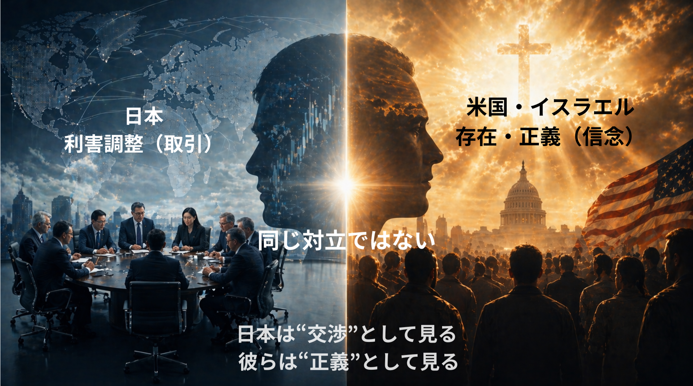
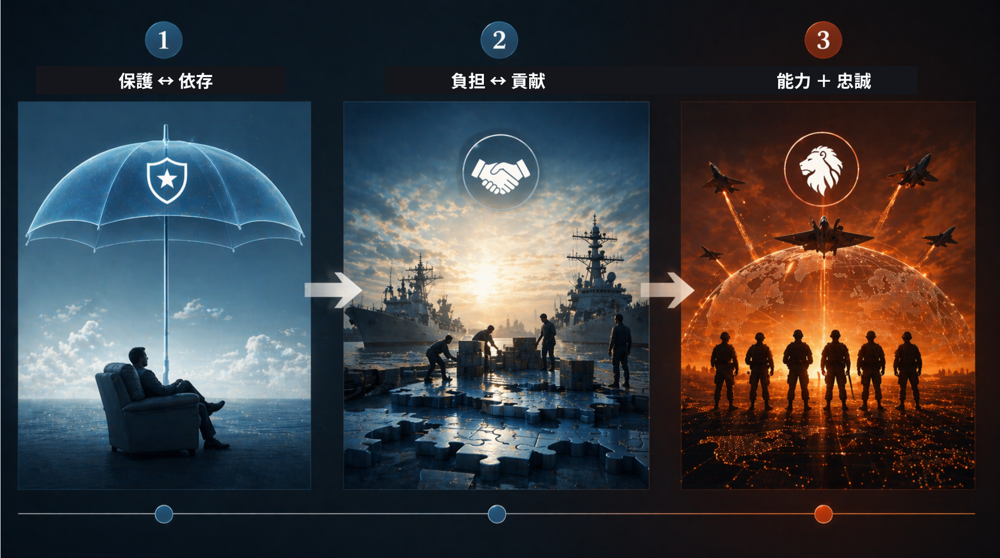
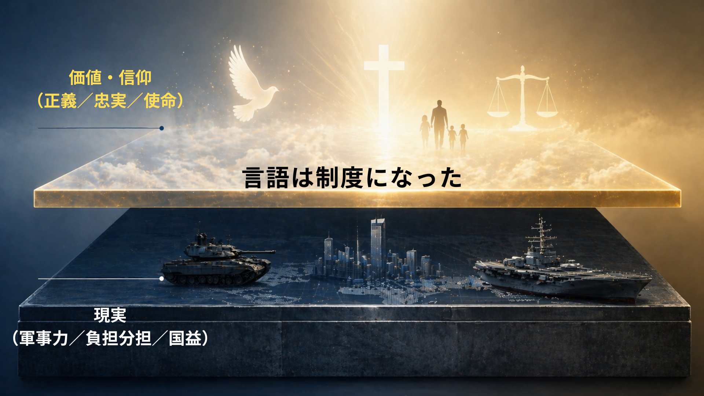

「聖金曜日に撃墜され、土曜日は岩の割れ目に潜み、復活祭の朝に帰還した——」
2026年4月6日、米国防長官ピート・ヘグセスは記者会見の演壇でこう言った。撃墜されたパイロットの救出劇を、イエス・キリストの受難と復活に重ねた言葉である。「おお、神は善なり」と続けた。比喩ではない。これが今、米軍の公式言語である。
宗教が同盟の"言語"として機能することは、以前から指摘されていた。しかしいま起きているのは、言語の変化ではない。制度の変化だ。
■ 数字で見る福音派の重力
白人福音派はアメリカの成人人口の約23%を占める。2024年大統領選でのトランプ支持率は80%を超え、共和党政権の最強の岩盤として機能し続けている。ヘリテージ財団が主導したProject 2025は、行政改革提案532件のうち283件（53%）が2026年2月時点で着手・完了済みだ。
その内訳には、宗教的自由委員会の設置、軍内でのキリスト教礼拝の推進、「反キリスト教バイアス」対策タスクフォースの創設が含まれる。これは信仰の問題ではない。数字になった政治の問題だ。
■ 同盟は「取引」か「信念」か——認識のズレ

日本はこの変化を、依然として「交渉の変数」として捉えようとしている。防衛費の積み増し、駐留費交渉、艦船の共同展開。これらは「利害の調整」として処理できる問題だと見なしている。
しかし、相手が同じ土俵に立っていないとしたら。ヘグセスはペンタゴンの演壇から、全国民に「イエス・キリストの名において」イランとの戦争の勝利を祈るよう呼びかけた。信仰に合わない高官を解任し、軍の人事コードから無神論・他宗教のカテゴリを削除しつつある。「Deus Vult（神はそれを望む）」と公言する国防長官の世界観において、同盟とは条約ではなく使命の共有だ。
日本が迫られているのは、単なる「負担の分担」ではない。「どちら側に立つのか」という問いである。
■ 同盟の進化——保護から「忠誠」へ

冷戦期の同盟は「保護と依存」の構造だった。それが「負担と貢献」の相互交換へと変化し、今や「能力と忠誠」の共有が求められる段階に入りつつある。注意すべきは、この「忠誠」の定義がヘグセス的文脈では信仰的忠誠を含意しうることだ。何を守るべきかという価値判断が共有されなければ、能力だけ提供する国は同盟の外縁に置かれる。
■ 同盟の二層構造——力学と意味の乖離、そして融合

深層には力と利害がある。表層には価値と言語がある。問題は、その表層がいま「言語」から「制度」へと変貌しつつある点だ。ヘグセスの宗教的レトリックは単なる修辞ではない。人事・予算・作戦の正当化に直結している。「宗教は政策の理由ではなく言語だ」という分析は半分しか正しくない。言語が制度を変えるとき、それはもはや単なる言語ではない。
この構造を読めないとき、日本は二重の盲点に立たされる。一つは、相手の言語が読めないこと。もう一つは——こちらの方が深刻だが——読めないがゆえに、批判の根拠も持てないことである。
■ 保守の試練——同盟か、思考停止か
日本の保守は、同盟を重視する姿勢を掲げてきた。それ自体は誤りではない。だが問われるのは、重視するかどうかではなく、何を見ているかである。
エドマンド・バークが説いたのは、情熱そのものではなく、それを制度と慣習のうちに制御する知恵だ。国家を守るとは、感情に流されないことである。その観点から言えば、ヘグセスの振る舞い——軍を宗教色で染め、戦場を聖書の物語で語り、信仰を人事の基準にする——は保守の知性ではなく、バークが最も警戒した「情熱の制度化」そのものだ。
同盟だから支持する、という態度は判断ではない。同盟の名のもとに何が行われているかを問わないことは、保守の矜持の放棄である。
■ 日本が持たなければならない言葉
問われているのは、アメリカの信仰ではない。日本の言語である。
同盟を「条約」として理解することと、「使命の共有」として要求されることの間には、埋めがたい溝がある。その溝を日本は見てこなかった。見てこなかった分だけ、埋めるための言葉も育てなかった。
ヘグセスが語る言語を、日本は解読できない。それだけなら、まだ学べばいい。問題は、解読できないまま対話するとき、日本は相手の論理を拒否する根拠すら持てないことだ。拒否の根拠を持たない国は、やがて条件を問うことすらできなくなる。
日本が今問われているのは、同盟を理解する覚悟だけではない。同盟の中で、自分の言葉で異議を唱えられるかどうかである。